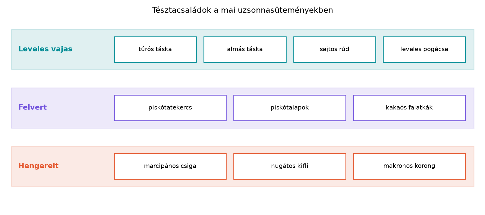
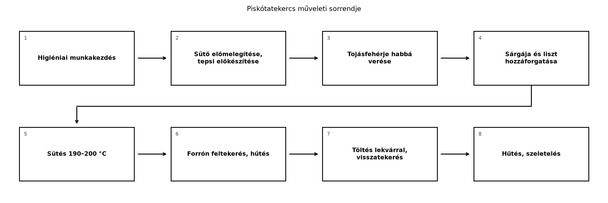

A reggeli műszakban egymás mellett készül a leveles tésztából nyújtott sajtos rúd, a hidegen vert piskótatekercs és a marcipános csiga. Ugyanaz a vendég reggel a pultból viszi, az ebéd mellé pogácsát kér, délután pedig egy szelet piskótatekercset. Ha a leveles tészta nem hidegen van hajtogatva, a rúd tömör lesz; ha a piskótalapot nem tekerjük fel forrón, a tekercs megreped; ha az almás töltelék túl nedves, a táska kifolyik. Ezért ezeknél a termékeknél nem elég a receptet ismerni: a tészta hőmérsékletét, a töltés időpontját és a sütés utáni műveleteket együtt kell szabályozni.
A mai uzsonnasütemények három tésztacsaládból épülnek fel. A tésztatípus határozza meg, hogy a terméket tölthetjük-e sütés előtt vagy csak utána, és milyen hőfokon kell sütni.

A leveles vajas tészta (feuilletage) mechanikai lazítással készül: a
tészta és a zsiradék vékony rétegeit hajtogatjuk. A Vajas és leveles tészta feldolgozása és sütése
alfejezetben tanult szabályok itt is érvényesek: a tészta hideg, 10–14
°C-os legyen (ellenőrizendő: üzemi gyakorlat), nyújtáskor
gyakran pihentessük, és a vágott szélét ne kenjük le, mert összeragadnak
a rétegek.
Recept. Túrós táska leveles tésztából (20 db, kb. 92 g/db
nyers tömeg) – a mennyiségek tanulási célúak, a szakmában
elterjedt receptúra alapján
(ellenőrizendő: eredeti forrás).
| Nyersanyag | Mennyiség (g) | Megjegyzés |
|---|---|---|
| Leveles tészta | 1000 | hideg, kb. 3–4 mm-re nyújtva |
| Tehéntúró | 600 | áttörve, lecsepegtetve |
| Porcukor | 80 | |
| Tojássárgája | 50 | |
| Búzadara | 30 | vízfelszívó, megköti a nedvességet |
| Vaníliás cukor | 10 | |
| Reszelt citromhéj | 2 | kezeletlen héjból |
| Mazsola | 50 | áztatott, lecsepegtetett, opcionális |
| Tojás a lekenéshez | 20 | |
| Összesen | 1842 |
Eljárás. 1. A hideg leveles tésztát 3–4 mm vastagra
nyújtjuk, 10 cm × 10 cm-es négyzetekre vágjuk. 2. A túrót porcukorral,
tojássárgájával, búzadarával, vaníliás cukorral, citromhéjjal és
mazsolával simára keverjük. 3. Minden négyzet közepére egyenletes adag
tölteléket teszünk, a széleket óvatosan megkenjük tojással, majd a
tésztát átlósan félbehajtjuk, a széleket villával lenyomkodjuk. 4. A
tetejét tojással vékonyan lekenjük – a vágott széleket ne! 5. 200–220
°C-on 18–25 percig sütjük (ellenőrizendő: sütőtől függően),
amíg a tészta aranybarna és leveles, a töltelék maghőmérséklete pedig
legalább 75 °C (ellenőrizendő: hatályos útmutató).
Jogszabály. A nyers tojássárgáját tartalmazó
tölteléket a sütés hőkezeli, ezért a megfelelő maghőmérséklet
biztosítása élelmiszerbiztonsági követelmény a 852/2004/EK rendelet
szerint. Az allergének – glutén, tojás, tej – a késztermék jelölésében
kötelezően feltüntetendők a 1169/2011/EU rendelet II. melléklete szerint
(ellenőrizendő: jelölési gyakorlat).
Almás táska. Ugyanígy készül, de az almatölteléket sütés előtt töltjük. Az almát meghámozzuk, szeleteljük, kevés cukorral, fahéjjal és citromlével előpároljuk, majd zsemlemorzsával vagy búzadarával sűrítjük. A nyers tésztára hideg tölteléket teszünk, a tészta tetejére gőzlyukat vágunk, hogy a keletkező vízgőz távozzon. Ha a töltelék túl nedves, a tészta alja szottyos lesz.
Sajtos rúd. A leveles tésztalapot 1,5–2 cm széles
csíkokra vágjuk, tetejét tojással lekenjük, reszelt sajttal és köménnyel
vagy szezámmaggal megszórjuk. A sütés 200–220 °C-on, 15–20 percig tart
(ellenőrizendő). A sajt a sütés végén barnuljon meg, de ne
égjen keserűre.
Leveles pogácsa. Sós, hajtogatott leveles tésztát kb. 1–1,5 cm vastagra nyújtunk (ellenőrizendő: üzemi receptúra), mert sütéskor többszörösére nő, pogácsaszaggatóval kiszúrjuk, tetejét tojással lekenjük, reszelt sajttal vagy szezámmaggal díszítjük. A kiszúrót soha ne csavarjuk, mert a szélek összezárják a rétegeket.
Töltés sütés előtt vagy után? A leveles tésztánál
sütés előtt csak olyan tölteléket szabad betölteni, amely a sütési
hőmérsékleten stabil marad, és amelyben a nyers állati eredetű összetevő
a sütéssel teljesen hőkezelődik. Hideg, nyers tejszínes vagy tojásos
krémet csak a már kisült, kihűlt formába töltsünk – ekkor a késztermék
hűtése (0–5 °C) kritikus pont (ellenőrizendő).
A felvert tészta (génoise/sponge) lazítását a tojáshab adja. A Hideg úton készült könnyű és nehéz felvertek és a Meleg úton készült könnyű és nehéz felvertek, hibák alfejezetekben tanult két tésztavezetés itt más-más termékre alkalmas:
(ellenőrizendő),
majd hűlésig verjük. Stabilabb emulzió, egyenletesebb morzsa:
piskótalapok, kockák készülnek belőle.Piskótatekercs. A legfontosabb szabály: a forró lapot azonnal, még melegen fel kell tekerni – lehetőleg porcukorral meghintett konyharuhával –, mert így a tészta megtanulja a csigaformát, és kihűléskor nem reped. Csak a kihűlt tekercset töltsük meg, különben a töltelék kifolyik, a lap elázik.
Piskótalapok és falatkák. A melegen vert piskótamasszát sütőpapírral bélelt tepsibe vagy kapszlikba adagoljuk. A kész lapot lekvárral vagy krémmel párosítjuk, felszeleteljük, és porcukorral, kakaóval vagy olvasztott csokoládécsíkokkal díszítjük.
A hengerelt tészták – étkezési marcipán, sütőmarcipán, makronmassza, nugátmassza – formázható, édes masszák, amelyeket gyakran előre kikevert, kényelmi anyagként vásárol a cukrászüzem. A Sütőmarcipánok, makronok és nugátok alfejezetben tanult alapmasszákból készülő uzsonnasütemények:
(ellenőrizendő: forrásreceptúra).A hengerelt masszák sok cukrot és olajos magvat tartalmaznak, ezért érzékenyek a túlsütésre: a felszín ne száradjon keményre, a belső maradjon rugalmas.
A leveles tésztából formába bélelt kosárkát vagy tartletet először
vakon sütjük: a tésztát a formába simítjuk,
sütőpapírral és vakon sütő babbal/rizsszel leterheljük, majd 200 °C-on
elősütjük (ellenőrizendő). A kihűlt, üreges tésztát csak
ezután töltjük hideg krémmel, gyümölccsel vagy túrókrémmel.
A felvert tésztát kapszlikba, gyűrűbe vagy tepsibe adagoljuk. A kész piskótaterméket bevonhatjuk:
A díszítéshez használt magok, gyümölcsök és olvasztott
csokoládécsíkok mellett mindig gondoljunk az allergénekre: a mandula,
dió, szezám, földimogyoró keresztszennyeződést okozhat. A nem ehető
díszeket jelölni kell, és élelmiszerrel érintkezésre alkalmas anyagból
kell készülniük
(ellenőrizendő: hatályos anyaghasználati útmutató).
Az alábbi számítások a Receptúra és anyaghányad: nagyítás, kicsinyítés, szorzószám és a Veszteség- és tömegnövekedés-számítás alfejezetekben tanult képleteket használják.
Példa 1. Túrós táska 45 db-ra.
Az eredeti recept 20 db-ra szól, ezért a szorzószám:
A leveles tészta mennyisége:
A többi anyag értelemszerűen:
Ellenőrzés: az összes nyersanyag , a kerekítés nélküli összeg ugyanennyi; a kerekített mennyiségek összege (1 g kerekítési eltérés). A tojássárgáját mérjük le, mert a darab csak tájékoztató.
Példa 2. Piskótatekercs sütési veszteséggel.
Egy rendezvényre 10 db piskótatekercset kell készíteni. Tekercsenként 80
g kész piskótalap szükséges, a tölteléket külön számoljuk. A piskótalap
sütési vesztesége 12% (ellenőrizendő: tájékoztató érték).
Kérdés: mennyi nyers piskótatésztát és mennyi lisztet kell kimérni?
A szükséges kész piskótalap:
A nyers tészta:
A technológiai lap receptje szerint a nyers tésztában a liszt aránya 100 g / 405 g:
Ellenőrzés: a 405 g nyers piskótatésztából kész lap lesz, tehát a 909,1 g nyers tésztából kész lap lesz. ∎
Cél: hidegen vert könnyű piskótából egyenletes, jól
feltekerhető, lekvárral töltött piskótatekercs készítése.
Eszközök és anyagok: mérleg, keverőtál, habverő vagy
univerzális konyhagép, spatula, sütőpapír, 30 × 40 cm-es tepsi,
konyharuha, hűtő.
Higiéniai munkakezdés: tiszta munkaruha, hajháló vagy
sapka, ékszer le, kézmosás, tiszta eszközök és felületek, tojás- és
lisztallergén-keresztszennyeződés ellenőrzése.
Biztonsági korlát. A habverő gép használata tanműhelyi vagy üzemi környezetben, oktatás után és felügyelet mellett végezhető. A gép védőburkolatát nem szabad eltávolítani, a forgó habverőbe benyúlni tilos; tisztítás előtt a gépet áramtalanítani kell. A forró sütőajtó és a forró tepsi égési sérülést okozhat.
Technológiai lap.
1. Termék neve, termékcsoport, alapmennyiség: Töltött
piskótatekercs; felvert tésztából készült uzsonnasütemény; 1 db 30 × 40
cm-es lapból 12 szelet. 2. Anyaghányad:
| Nyersanyag | Mennyiség (g) | Megjegyzés |
|---|---|---|
| Tojásfehérje | 120 | szobahőmérsékletű, zsírmentesen elválasztva |
| Tojássárgája | 80 | |
| Kristálycukor | 100 | |
| Finomliszt | 100 | átszitálva |
| Vaníliás cukor | 5 | |
| Sárgabaracklekvár | 250 | simára kevert, magmentes |
| Porcukor | 15 | a lap borításához és a tetejére |
| Összesen | 670 |
Megjegyzés: a nyers piskótatészta tömege 405 g; a sütési veszteség
kb. 12% (ellenőrizendő), így a kész lap kb. 356 g, a
töltött tekercs kb. 620–630 g.

Számozott lépések:
A sütőt előmelegítjük 190–200 °C-ra
(ellenőrizendő: sütőtől függően).
A tepsit sütőpapírral béleljük.
A tojásfehérjét a kristálycukor kétharmadával (kb. 67 g) kemény, fényes habbá verjük.
A tojássárgáját a maradék cukorral és a vaníliás cukorral fehéredésig keverjük.
A cukros tojássárgája-keveréket óvatosan a habhoz forgatjuk, majd a lisztet több részletben beleforgatjuk.
A masszát a tepsire simítjuk, kb. 8–10 mm vastagon.
190–200 °C-on 10–12 percig sütjük (ellenőrizendő),
amíg a teteje rugalmas és aranybarna.
A forró lapot porcukorral meghintett konyharuhára borítjuk, a sütőpapírt lehúzzuk, a lapot a konyharuhával együtt feltekerjük, és kihűtjük.
A kihűlt tekercset óvatosan kitekerjük, egyenletesen megkenjük lekvárral.
Visszatekerjük, porcukorral megszórjuk, hűtőben 30–60 percig dermesztjük, majd 12 szeletre vágjuk.
Kritikus pontok és technológiai kulcspontok: a
tojásos masszát azonnal sütni kell; a sütés hőkezelése biztosítja a
tojásfehérje és -sárgája biztonságos fogyaszthatóságát; a kész tekercset
hűtve (0–5 °C) tároljuk (ellenőrizendő: hatályos útmutató).
Technológiai kulcspont: a lisztet ne keverjük túl, mert a hab összeesik;
a lapot forrón fel kell tekerni.
Allergének: glutén (búzaliszt), tojás (tojásfehérje, tojássárgája). Ha a lekvár vagy a porcukor az üzemben dióval, mandulával érintkező eszközzel érintkezik, a keresztszennyeződést jelölni kell.
Minőségi jellemzők: a szelet csigaformája szabályos, a lap vastagsága egyenletes, a tészta rugalmas, nem száraz, a töltelék egyenletes, a felszín enyhén porcukros.
Tárolás, eltarthatóság, tálalás: hűtve 0–5 °C-on
1–2 nap (ellenőrizendő), lefedve, szagmentes környezetben;
tálalás előtt szeleteljük.
Tipikus hibák a gyakorlatban: - A lap megreped: ok – túlsütötték, vagy nem tekerték fel forrón. - A tészta tömör, szalagos: ok – a lisztet túl erősen keverték bele, vagy a hab gyenge volt. - A tekercs elázik: ok – a lapot melegen töltötték, vagy a töltelék túl folyós.
A leveles termékeknél a tészta legyen aranybarna, ropogós, jól
látható leveles szerkezetű; a töltelék ne folyjon ki. A túrós táska
belső szerkezete: a tészta réteges, a túrótöltelék krémes, de nem
folyós. A sajtos rúd egyenletesen vékony, a sajt ne legyen keserű. A
piskótatekercsnél a metszet csigaformája szabályos, a lap rugalmas, a
töltelék egyenletes. A hengerelt tésztás termékeknél a felszín sima, a
belső puha, az olajos magvak nem égtek meg. Mindegyik terméknél
ellenőrizzük a tömegét: a sütés utáni tömeg ne térjen el a technológiai
lapon számított értéktől a megengedett tűrésnél nagyobb mértékben
(ellenőrizendő: hatályos előírás).
| Hiba | Tünet | Ok | Megelőzés / javítás |
|---|---|---|---|
| Leveles termék tömör, nem leveles | alacsony, szalonnás tészta | meleg tészta, túlnyújtózás, lekent szél, alacsony sütőhőfok | hideg tészta, éles vágás, csak a tetejét lekenjük, 200–220 °C |
| Piskótatekercs reped | repedések a tekercs külső oldalán | túlsütött, száraz lap; kihűlés utáni feltekerés | azonnal, forrón feltekerjük; a sütési időt betartjuk |
| Almás táska kifolyik | a töltelék a tésztából kifolyik, az alja szottyos | túl nedves, előpárolás nélkül, nyersen betöltött alma; nincs gőzlyuk | az almát előpároljuk, zsemlemorzsával sűrítjük, a sűrített tölteléket kihűtve töltjük; gőzlyukat vágunk |
| Túrós táska nyers belül | a tészta nyers, a töltelék folyós | túl vastag tészta, túl alacsony hőfok, maghőmérséklet nem ellenőrzött | 3–4 mm vastag lap, 200–220 °C, maghőmérséklet mérése |
| Sajtos rúd keserű | égett sajtíz | túl magas hőfok, túl hosszú sütési idő | 200–220 °C, a sajt barnulását figyeljük |
Egy cukrászüzem péntek reggel 120 db sajtos rudat, 80 db túrós táskát és 10 db piskótatekercset készít egy céges rendezvényre. A leveles tésztát az előző nap hajtogatták, éjszakára hűtőben pihentették. Reggel a tésztát hidegen, rövid szakaszokban nyújtják. A piskótatekercsnél a lapot azonnal feltekerik, ezzel elkerülik, hogy kihűlés után repedjen. A töltött tekercseket azonnal hűtőbe teszik. Egy dolgozó a sajtos rudak tetejét a vágott széleken is lekeni tojással; a sütőből kikerülő rúd tömör, nem leveles. A tételt visszaminősítik, és a hibát a tésztavezetésnél keresik: a lekenés volt a baj. A tanulság: a leveles tésztánál a vágott szélek lekenése ugyanolyan hiba, mint a meleg tészta.
1. feladat (A) Sorold fel a leveles tésztából készült négy uzsonnasüteményt, és mondd meg mindegyiknél, hogy a töltelék sütés előtt vagy után kerül a tésztába.
2. feladat (A) Magyarázd el a hidegen vert és a melegen vert piskóta közötti különbséget, és nevezz meg egy-egy rájuk jellemző uzsonnasüteményt.
3. feladat (B) A túrós táska 20 db-os receptjét átszámítjuk 60 db-ra. Mennyi tehéntúró, tojássárgája és mazsola kell?
4. feladat (B) Egy cukrászüzem 6 db piskótatekercset készít. Egy tekercsben 85 g kész piskótalap van, a sütési veszteség 11%. Mennyi nyers piskótatésztát és mennyi lisztet kell kimérni a technológiai lap arányai szerint?
5. feladat (C) Hibaelemzés: egy piskótatekercs kihűlés után megreped, és a töltelék sem tapad hozzá. Milyen hipotéziseket állítasz fel? Mit ellenőrzöl, és mi a javítás?
6. feladat (D) Készítsd el a piskótatekercset a gyakorlati útmutató szerint. Töltsd ki a technológiai lapot, mérd meg a nyers és a kész tömeget, számítsd ki a tényleges sütési veszteséget, és értékeld a tekercs metszetét, ízét, állagát.
Önellenőrzés – válaszok
1. feladat (A) megoldása
Túrós táska: sütés előtt töltött, a tojásos túrótöltelék a sütéssel
hőkezelődik. Almás táska: sütés előtt töltött, az almát előpárolják.
Sajtos rúd: nincs külön töltelék, a sajt a tetejére kerül sütés előtt.
Leveles pogácsa: sós tészta, nincs töltelék, a díszítés kerül rá sütés
előtt.
2. feladat (A) megoldása
A hidegen vert piskótánál a tojáshabot hideg tojásfehérjéből verjük, a
tojássárgáját külön keverjük; könnyű, rugalmas lapot ad, például
piskótatekercs. A melegen vert piskótánál az egész tojást cukorral
vízfürdőn 40–45 °C-ra melegítjük, majd hűlésig verjük; a hab stabilabb,
a tészta egyenletesebb, például piskótalapok, kockák.
3. feladat (B) megoldása
A szorzószám
.
Tehéntúró:
.
Tojássárgája:
.
Mazsola:
.
Ellenőrzés: a teljes anyaghányad
.
4. feladat (B) megoldása
A szükséges kész piskótalap:
.
A nyers tészta:
.
A liszt aránya a technológiai lapban
,
ezért:
.
Ellenőrzés:
kész lap. ∎
5. feladat (C) megoldása
Hipotézisek: a lap túlsült, ezért kiszáradt; a lapot nem tekerték fel
forrón; a töltelék túl folyós vagy hidegen került a hideg lapra.
Ellenőrzés: nézzük meg a sütési időt és a lap színét; tapintsuk a kihűlt
lapot – reped és merev; kóstoljuk a tölteléket – folyós. Javítás: a
lapot azonnal fel kell tekerni, a tölteléket sűríteni kell, és a lapot
vékonyan megkenhetjük lekvárral vagy sziruppal, hogy tapadjon; ezt a
konkrét tételt feldarabolva, krémdesszertben lehet hasznosítani.
6. feladat (D) megoldása
A gyakorlati feladat értékelése a technológiai lap kitöltésén, a
tényleges tömegmérésen és az érzékszervi vizsgálaton alapul. A tanuló
mérje meg a nyers tésztát (az anyaghányad összesen 670 g, ebből a
piskótatészta 405 g), sütés után a kihűlt lapot (várhatóan kb. 356 g, ha
a veszteség 12%), majd töltés után a teljes tekercset. A tényleges
veszteség:
.
A tekercs metszetét csigaformára, a töltelék egyenletességére és a
tészta rugalmasságára értékeljük; hibát akkor jelzünk, ha reped, a
töltelék kifolyik, vagy a tészta tömör.
A leveles vajas uzsonnasütemények – túrós táska, almás táska, sajtos
rúd, leveles pogácsa – alapja a hideg tészta és a vágott szélek védelme;
a sütés 200–220 °C-on történik (ellenőrizendő). Sütés előtt
hőálló, hőkezelt tölteléket töltsünk; hideg krémet csak a kisült, kihűlt
formába. A felvert uzsonnasütemények közül a hidegen vert könnyű piskóta
a piskótatekercs, a melegen vert genoise a piskótalapok, a nehéz felvert
pedig a diós, mákos, kakaós lapok alapja; a piskótalapot forrón fel kell
tekerni, és hidegen tölteni. A hengerelt masszákból – sütőmarcipán,
makron, nugát – marcipános csigák, nugátos kiflik és makronos korongok
készülnek, alacsonyabb, 160–180 °C-os sütéssel
(ellenőrizendő). Minden terméknél kritikus a tojás
hőkezelése, a sütés utáni hűtés és az allergének jelölése.
Továbbvitt eredmény: az itt használt leveles, felvert
és hengerelt tésztaanyaghányadokat, a sütési veszteséget és a minőségi
hibákat a Uzsonnasütemények anyaghányad-számítása
és technológiai lapja alfejezetben rendszeresen visszük tovább.